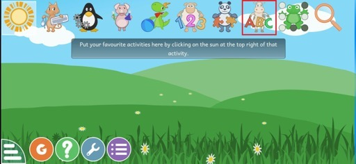
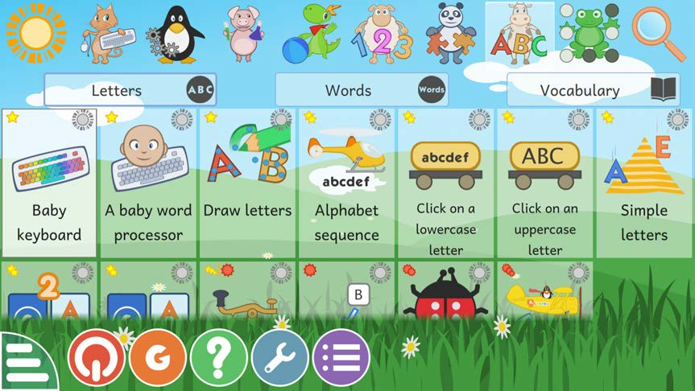

Lesson 1 - Steps ii and iii
(ii) Select the seventh animal labelled ABC to open the page.
(iii) You will see the following screen with games you can play.


(ii) Select the seventh animal labelled ABC to open the page.
(iii) You will see the following screen with games you can play.

